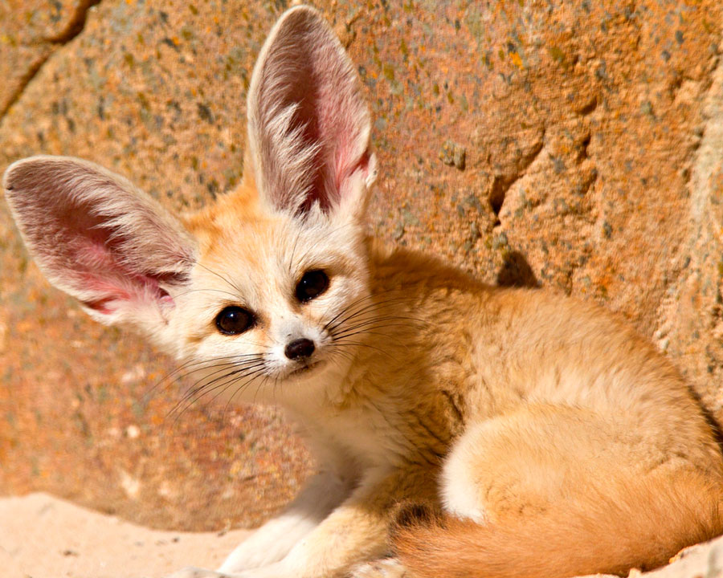

Фенек (лат. Vulpes zerda) — миниатюрная лисица своеобразной внешности, которая живет в пустынях Северной Африки.
Фенек — самый маленький представитель семейтва псовых, по размерам он меньше домашней кошки. Высота в холке 18—22 см, длина тела — 30—40 см, хвоста — до 30 см, весит он до 1,5 кг. Морда короткая, заостренная. Глаза большие. Уши фенека — самые большие среди хищников по отношению к величине головы; они достигают 15 см в длину.

Самая многочисленная популяция фенеков обитает в центральной Сахаре, хотя они встречаются от северного Марокко до Синайского и Аравийского полуостровов, а на юге — до Нигера, Чада, Судана.